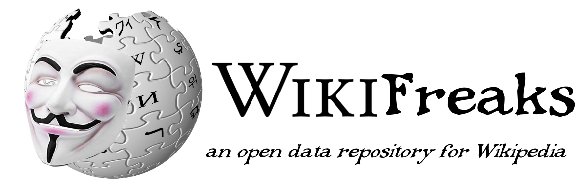

MLIS Project Index
Each header and image features a link to the project!
Baloney Detectives: Misinformation Escape Room
Collaborators: Andrew Charlton-Jones, Sabrina Hsu, Luka Taing

Baloney Detectives is a virtual, educational escape room made with the game design platform Twine, which aims to improve teens' Internet literacy through engaging puzzles mirroring real-world social media misinformation.
The above link contains an index of our design documentation, and you can also play the escape room yourself here.
Curation Protocol: 2022's Hottest Tracks as Data

For my first data curation class, I created a repository for data surrounding the most-played songs in the past year on TikTok and Spotify, connecting them to the classifcation scheme on the website Organize Your Music. I gathered the data from different sources, cleaned it using the spreadsheet application OpenRefine, and wrote public-facing documentation, in the form of a data dictionary, XML metadata, and a GitHub repository.
WikiFreaks: An Open Repository of Wikipedia Data
Collaborator: Lily Woodard
WikiFreaks is an open repository for researchers to store data relating to the website Wikipedia, hosted over GitHub. I was in charge of writing a public-facing repository manual for users [linked above] using the digital publishing platform Manifold, as well as metadata in XML and HTML, while my partner was in charge of gathering and cleaning data and manging repository architecture.
Archive Access for Disabilities
Tasked with addressing social injustices in the archival profession, I created a tool to evaluate the accessibility of archives for people with disabilities and proposed it as a resource for the Society of American Archivists [SAA]. This project also includes a comparative assessment of accessibility efforts by institutional archives.